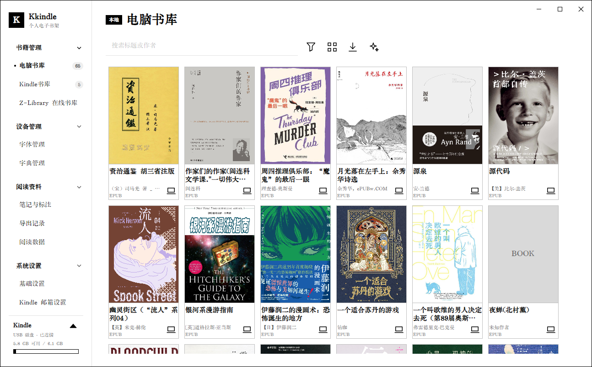
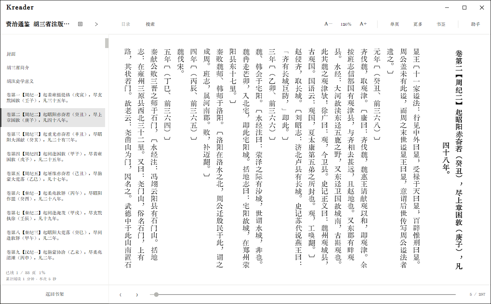
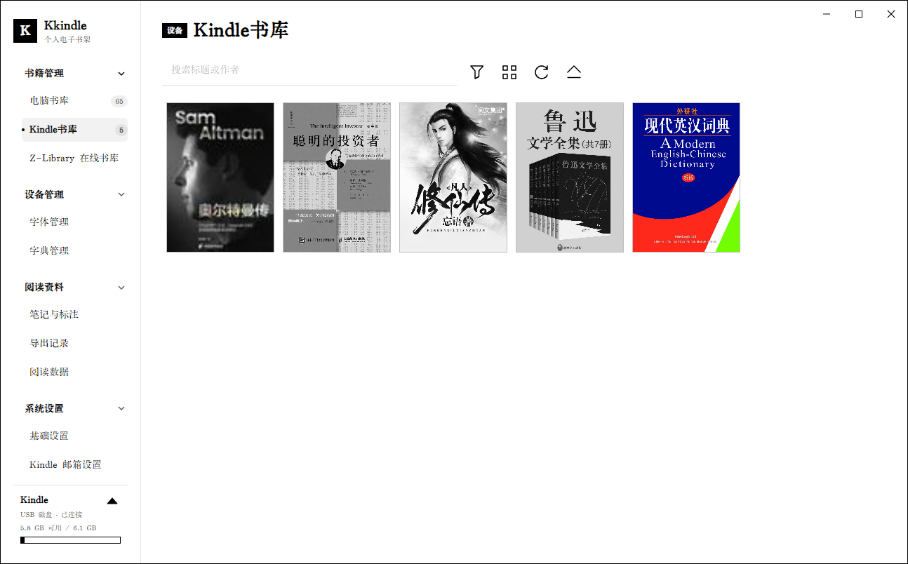
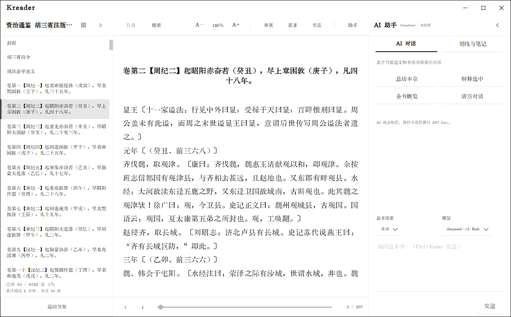

01 LOCAL LIBRARY
把混乱的文件，变成真正的书库。
导入 EPUB、PDF、MOBI 和 AZW3，自动识别元数据与封面，按作者、标签、格式和阅读状态找到下一本书。
KINDLE, WITHOUT THE FRICTION.
Kkindle 是一款安静、跨平台的电子书书库与 Kindle 工作台。整理你的书，专注地读，然后把它们带到真正的阅读设备上。

THE WHOLE READING DESK
书库、阅读器、设备和阅读记录在同一处工作。没有多余的云端流程，也不打断你的阅读节奏。
01 LOCAL LIBRARY
导入 EPUB、PDF、MOBI 和 AZW3，自动识别元数据与封面，按作者、标签、格式和阅读状态找到下一本书。

02 KREADER
支持横排、竖排、滚动、分页和双栏阅读。书签、搜索、脚注、批注与阅读进度都围绕正文展开。

03 KINDLE WORKFLOW
连接 Kindle 后查看书籍、容量、字体和词典，批量发送、导出和安全退出设备，把传书变成一个清晰的动作。

04 READING TOOLS
用 AI 解释选文、总结章节或讨论全书；用批注、词典、阅读数据和导出记录，把阅读留下来。
DOWNLOAD Kkindle
官网只负责展示与指路，安装包来自 GitHub Releases。下载区会自动选择最新稳定版本。
Windows 11 / x64，自带运行时。
Debian / Ubuntu，或其它 x64 / arm64 发行版。
macOS 12+，提供 Intel 与 Apple Silicon 包。
正在连接 GitHub Releases…
SHA-256 校验值v0.7.7
最新v0.7.6
v0.7.5
BEFORE YOU START
可以导入和阅读 EPUB、PDF、MOBI 与 AZW3。格式转换依赖用户自行安装的 Calibre。
书籍、封面、阅读记录默认保存在本机。AI 请求只发送相关片段，API Key 使用系统安全存储。
请按照仓库中的 macOS 安装说明操作。发布包是否经过公证，以对应版本的发布说明为准。
可以在 GitHub 仓库提交 Issue，或者查看 Releases 和更新日志。
ABOUT KKINDLE
Kkindle 是一款面向 Windows、Linux 和 macOS 的开源电子书书库与 Kindle 管理工具。它将书库整理、阅读、批注和设备传输放在同一个本地优先的工作流中。